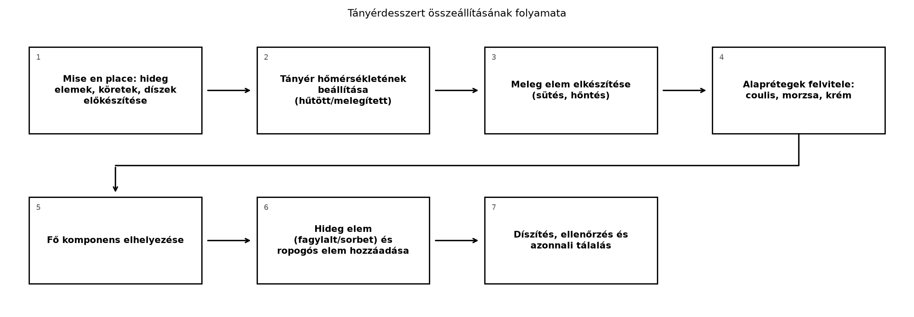

A tányérdesszert mindig rendelésre készül, ezért nem lehet egyszerűen vitrines süteményként kezelni. A vendég azt várja, hogy a desszert egyszerre legyen friss, látványos, megfelelő hőmérsékletű és biztonságos. Ez a fejezet azt tanítja meg, hogyan tervezzünk és tálaljunk hideg, meleg, valamint kombinált tányérdesszerteket.
Képzeljünk el egy fehér, 24 cm átmérőjű tányért. Bal oldalt egy kis henger alakú étcsokoládé-mousse áll, rajta bársonyos kakaóvaj-bevonat. A tányér jobb oldalán málnacoulis-csík fut, mellette egy gombóc vanília sorbet, alatta vékony, ropogós kakaós crumble. A mousse tetején egy apró csokoládé-tuile és friss málna ül. Minden elem más színű, állagú és hőmérsékletű. A desszert azonnal az elkészülés után kerül a vendég elé, a hideg elemek hidegek, a mousse éppen felengedett, a ropogós elem nem ázott el.
A HTML-változatban az egyes elemek kiemelhetők, és egy hibás (zsúfolt, maszatos peremű) változat is megnézhető.
Az ilyen tányérdesszert összeállítása látszólag egyszerű, valójában alapos mise en place-t és pontos időzítést igényel.
A tányérdesszert összeállításának folyamatát mutatja az alábbi ábra:

A lépések sorrendje egy hideg–meleg kombinált desszertnél is hasonló, csak a meleg elem sütése kerül a tálalás előtti utolsó műveletek közé, hogy ne hűljön ki.
Definíció. A tányérdesszert olyan, adagonként elkészített és tányéron tálalt cukrászati készítmény, amely rendelésre készül, és több elemből – főkomponensből, öntetből, hideg vagy ropogós kiegészítőből, díszből – áll össze.
A tányérdesszert jellemzői:
Megjegyzés. A tányérdesszert nem feltétlenül bonyolult; egy jól elkészített gyümölcsös crumble vaníliasodóval éppúgy lehet tányérdesszert, mint egy többrétegű mousse desszert.
A tányérdesszerteket elsősorban hőmérsékletük és technológiájuk szerint csoportosítjuk.
A hideg desszert teljes egészében hűtött vagy fagyasztott elemekből áll. Ilyenek:
A hideg desszertek tálalási hőmérséklete jellemzően 4–8 °C, fagylalt/sorbet esetén −12 °C körüli, de ez a terméktől és a gyártótól függ (ellenőrizendő: üzemi előírás).
A meleg desszert közvetlenül sütés, párolás vagy hőntés után, forrón, még gőzölgőn kerül a tányérra.
A meleg desszertek tálalási hőmérséklete általában 55–65 °C, de a folyós fondant közepe ennél magasabb is lehet; a gyártói recept és a hőkezelési biztonság együttes követelmény (ellenőrizendő: hatályos hőmérséklet-idő ajánlás).
Mise en place. A hideg elemek, öntetek, ropogósok és díszek nagy része előre elkészíthető. A meleg elem sütése a tálalás előtti percekben történik, hogy forrón kerüljön a vendég elé.
A tányérdesszert fő eleme mellett a kiegészítők adják a változatosságot: ellentétes állagot, hőmérsékletet, színt és ízt.
Az önteteket gyakran a tányérra húzott csíkként, pöttyökként vagy cseppekként helyezzük el, nemcsak a fő elemre öntjük.
A sorbet gyümölcspüréből, cukorból és vízből készül, tej nélkül, ezért laktózmentes és tejmentes alapú lehet, ha a gyártósor nem szennyezett. A fagylalt tejszínt vagy tejet tartalmazhat, ezért allergénként kell jelölni.
A hideg desszerteknél a sorbet friss savasságot, a fagylalt krémességet ad; a meleg desszerteknél a hőmérsékleti kontraszt miatt kedvelt.
A ropogós elemeket légmentesen kell tárolni, mert a nedvességtől megpuhulnak, és elvesztik a funkciójukat.
A tányérdesszert kompozíciójánál a következő szempontokat érdemes figyelembe venni:
Szabály. A hideg elemek hidegen, a meleg elemek forrón kerüljenek a tányérra. A hideg és meleg elemeket ne fektessük egymásra úgy, hogy a meleg megolvassza a hideget, a hideg pedig kihűtse a meleget; inkább külön elhelyezkedjenek, vagy olyan sorrendben, hogy az összeállítás után azonnal tálaljuk.
A tálalási hőmérsékletek tájékoztató értékek (ellenőrizendő: üzemi előírás):
A hőmérsékletet érzékszervi ellenőrzéssel és ha szükséges, maghőmérővel ellenőrizzük.
Definíció. Az à la minute munka a tálalás pillanatában, közvetlenül a rendelés után végzett végső összeállítás. A cukrász nem a vitrinből veszi ki a kész terméket, hanem előkészített alapanyagokból állítja össze a tányért.
A jó à la minute munka feltétele:
Példa. Egy meleg fondant rendelésekor a fagylaltgombóc már adagolva, fagyasztóládában vár; a tányér előmelegített; a coulis adagolva; a fondant formából éppen kisütött. A fondant a tányérra kerül, mellé a hideg fagylalt, coulis-val díszítjük, azonnal tálaljuk.
A tányérdesszertnél különösen fontos, hogy a felszolgáló vagy az étlap pontosan tudja a 14 jelölendő allergéncsoport jelenlétét. A tányérdesszert több komponensből áll, ezért a keresztszennyeződés valószínűsége is nagyobb.
Jogszabály. Az 1169/2011/EU rendelet (élelmiszerjelölés) a fogyasztók tájékoztatását írja elő a 14 allergéncsoportról. A vendéglátásban az allergének jelölhetők szóban, írásban vagy az étlapon, de a tájékoztatásnak pontosnak, egyértelműnek és a vendég számára hozzáférhetőnek kell lennie. Az elővigyázatossági jelölés (pl. „nyomokban dióféléket tartalmazhat”) önkéntes, és nem helyettesíti a kötelező allergéntájékoztatást (ellenőrizendő: NÉBIH-útmutató).
A leggyakoribb allergének a tányérdesszertekben:
A technológiai lapon az Allergének sorban a 14
csoportból a ténylegesen jelenlévőket adjuk meg.
Kritikus pont. A keresztszennyeződött közös eszköz – mint a mousse habverője, a coulis turmixpohara, a crumble vajjal szennyezett eszköze – átviheti az allergént. Minden komponensnél külön eszközt, tiszta edényt és tiszta tányért használjunk; a mentes összeállításhoz dedikált tányér és eszköz kell.
A tányérdesszert adagját úgy kell meghatározni, hogy a vendég jóllakjon, de a tányér ne legyen túlzsúfolt. Egy teljes desszert adagja jellemzően 120–200 g, ezen belül a fő komponens 100–140 g, a kiegészítők 20–60 g. A pontos adagolás az étlap koncepciójától és a vendégkörtől függ.
Szabály. Az anyaghányad-számítás során a bruttó mennyiségből indulunk ki, és a veszteségeket (hámozás, sütési veszteség, tálalási maradék) levonva kapjuk a nettó készterméket. A korábbi alfejezetben megismert képlet:
ahol a veszteség tizedestörtben.
Ezt a tányérdesszert-összeállításnál is alkalmazhatjuk, ha adagonként kiszámoljuk a komponensek kiadósságát.
Példa. A hideg mousse desszert technológiai lapja 4 adagra ad meg mennyiségeket. 6 adagot kell készíteni.
A 4 adagos mousse-hoz:
A szorzószám:
Mennyiségek 6 adagra:
A kiegészítők (coulis, sorbet, crumble) is átszámítandók a 4 adagos receptből. A teljes tömeg:
6 adagra osztva a mousse adagja:
Ez közelíti a tervezett 100 g-ot. ∎
Példa. Az 1 adag hideg desszert anyagköltségét az alfejezet technológiai lapjának 4 adagos mennyiségeiből (adagonként 35 g csokoládé, 60 g tejszín, 5 g sárgája, 3 g cukor, 0,5 g zselatin, 30 g coulis, 40 g sorbet, 20 g crumble-alapanyag) számítjuk. Az árak tanulási példák, nem aktuális beszerzési árak (ellenőrizendő: beszerzési árak).
| Nyersanyag | Mennyiség (g) | Nyersanyagár (Ft/kg) | Költség (Ft) |
|---|---|---|---|
| Étcsokoládé 70% | 35 | 8 000 | 280 |
| Tejszín 35% | 60 | 2 500 | 150 |
| Pasztőrözött tojássárgája | 5 | 1 200 | 6 |
| Cukor | 3 | 450 | 1,35 |
| Zselatin | 0,5 | 15 000 | 7,5 |
| Málnacoulis | 30 | 4 000 | 120 |
| Vanília sorbet | 40 | 1 800 | 72 |
| Crumble | 20 | 3 000 | 60 |
| Összes anyagköltség | — | — | 696,85 |
A kerekített anyagköltség:
Ha a haszonkulcs 180%, akkor a nettó eladási ár:
Helyben fogyasztott tányérdesszertnél a vendéglátó-ipari szolgáltatás kedvezményes ÁFA-kulcsa alkalmazandó (tanulási példa: 5 %; ellenőrizendő: hatályos ÁFA-törvény, illetve a szervizdíj kezelése); más értékesítési formánál más kulcs, például az általános 27 % lehet, ezért a kulcsot mindig az értékesítés módja szerint kell meghatározni:
A fenti ár nem tartalmazza a munka- és rezsiköltséget, csak a nyersanyagot és az árrést, ezért tanulási példaként használjuk, nem üzleti ajánlatként. ∎
A következő útmutató egy hideg tányérdesszert elkészítését mutatja be. A meleg fondant receptjét a gyakorlati útmutató után közöljük.
Cél. Hideg málna–étcsokoládé mousse tányérdesszert készítése vaníliasorbet-tal és kakaós crumble-lel.
Eszközök és anyagok. Hűtött tányérok, kézi habverő vagy habfúvó, edények, tálak, mérleg, szilikon forma, hűtő, fagyasztó, nyomózsák.
Higiéniai munkakezdés. Munka tiszta köpenyben, hajhálóval, kézmosás után. A munkafelületek és eszközök fertőtlenítése. Minden nyersanyag felhasználás előtt ellenőrizendő.
Biztonsági korlát. A csokoládé olvasztása vízgőz felett vagy alacsony hőmérsékleten, ellenőrzés mellett történik. A gépi habverőt oktatás után és felügyelet mellett használjuk. A forró csokoládé forrázhat; a mousse-t a hűtőben gyorsan le kell hűteni.
Termék neve: Hideg málna–étcsokoládé mousse tányérdesszert vaníliasorbet-tal és kakaós crumble-lel
Termékcsoport: hideg tányérdesszert; mousse alapú desszert
Alapmennyiség: 4 adag, adagonként kb. 1 db 7 cm átmérőjű mousse (kb. 100 g), 30 g coulis, 40 g sorbet, 20 g crumble-alapanyag
| Nyersanyag | Mennyiség (g) | Megjegyzés |
|---|---|---|
| Étcsokoládé (70%) | 140 | olvasztva |
| Tejszín (35%) | 240 | felverve, 160 g + 80 g folyékony a csokoládéba |
| Pasztőrözött tojássárgája | 20 | élelmiszerbiztonsági okból pasztőrözött |
| Cukor | 12 | a tojássárgájához |
| Zselatinlap | 2 | hideg vízben áztatva |
| Málnacoulis | 120 | frissen mixelt, esetleg kevés cukorral |
| Vanília sorbet | 160 | tejmentes, hűtve |
| Crumble: liszt | 30 | morzsásra dolgozva vajjal, cukorral, kakaóval |
| Crumble: vaj | 22 | |
| Crumble: cukor | 22 | |
| Crumble: kakaópor | 6 | |
| Összes tömeg | 774 | 4 adag, adagonként kb. 194 g |
Műveleti sorrend:
Kritikus pontok:
Allergének: tej (tejszín, vaj), tojás (pasztőrözött sárgája), glutén (liszt a crumble-ben). A csokoládé szójalecitint tartalmazhat, ezért szója. A gyümölcs kén-dioxidot tartalmazhat, ha szárítottból készült.
Tárolás, eltarthatóság: a mousse hűtve 0–24 órán belül fogyasztandó; a crumble légmentesen, nedvességtől védve külön tárolandó (ellenőrizendő: gyártói előírás). A sorbet fagyasztva tárolandó, egyszer felengedett, visszafagyasztani tilos.
Termékcsoport: meleg tányérdesszert; csokoládés folyós közepű sütemény
Alapmennyiség: 5 db, egyenként kb. 90 g tészta (összesen 450 g)
| Nyersanyag | Mennyiség (g) |
|---|---|
| Étcsokoládé (70%) | 120 |
| Vaj | 100 |
| Tojás (pasztőrözött) | 100 |
| Cukor | 80 |
| Liszt | 40 |
| Kakaópor | 10 |
| Összesen | 450 |
Műveleti sorrend:
Allergének: glutén (liszt), tojás, tej (vaj, fagylalt), szója (csokoládé).
Figyelem. A fondant közepe csak részben sül át, ezért vendéglátásban pasztőrözött tojást használjunk, és a sütési hőmérséklet-időt ellenőrizzük; a fondant közepe nem sül át, ezért kizárólag pasztőrözött tojással készíthető; nyers héjas tojással folyós közepű fondantot tálalni tilos.
A tányérdesszert minőségi jellemzői:
Ellenőrzés. Az érzékszervi vizsgálat kiterjed a szemrevételre, tapintásra, hőmérsékletre, illatra és ízre. A tömegellenőrzésnél a tányért tárárva mérjük.
| Hiba | Ok | Megelőzés/javítás |
|---|---|---|
| A mousse szétfolyik a tányéron | túl kevés zselatin, nem dermedt meg, túl meleg a tányér | mérjük pontosan, hűtsük vissza; javítás: gyors hűtés |
| A fondant közepe túlsült, nem folyik | túl hosszú sütés, túl magas hőmérséklet | pontos sütési idő-hőmérséklet, sütőpróba |
| A ropogós crumble megpuhult | nedvesség, korábban tálalták | légmentes tárolás; tálalás előtt csak a végső percben helyezzük a nedves elemre |
| A fagylalt megolvad tálalás közben | a meleg elem mellé túl korán tettük; a tányér meleg | hűtött tányér, elkülönített elhelyezés, azonnali tálalás |
| Allergén nem tüntettük fel | hiányos dokumentálás, közös eszköz | technológiai lap, allergénsor, tiszta eszközök, szóbeli tájékoztatás |
Tilos. A kiolvadt fagylaltot visszafagyasztani; a lejárt tejszínt vagy tojást felhasználni; a nem ehető díszt élelmiszerként tálalni.
Egy cukrászda étlapján hétvégi menü részeként szerepel a „Málna–étcsokoládé mousse” tányérdesszert. A konyhában a tálalószakács előre elkészíti a mousse-t, a coulis-t, a crumble-t és a sorbet adagokat. Az étlapra felkerül, hogy a desszert tej, tojás, glutén és szója allergént tartalmaz.
Szombat este egy vendég jelzi, hogy tejallergiás. A felszolgáló megnézi az allergénkártyát: a mousse tejszínt, a crumble vajat, a sorbet tejmentes, de ugyanazon a gépen készült, ahol fagylaltot is gyártanak, ezért keresztszennyeződés lehetséges. A pultos felajánl egy friss gyümölcsös sorbet desszertet, amelyet külön, tejjel nem érintkező eszközzel készítettek. A vendég biztonságosan fogyaszthat, és pozitív élményt kap.
Tanulság: a tányérdesszert allergén-összetétele csak akkor ismert, ha minden komponensre és a keresztszennyeződésre is van ellenőrzött dokumentáció.
Önellenőrzés – válaszok
1. feladat (A) Határozd meg a tányérdesszert fogalmát, és sorolj fel legalább három jellemzőjét!
2. feladat (A) Egy hideg desszert 4 adag receptje 140 g étcsokoládét ír elő. Mennyi étcsokoládé kell 10 adaghoz?
3. feladat (B) A technológiai lapon szereplő 4 adagos hideg desszert teljes anyagköltsége 2 788 Ft. Számítsd ki 1 adag anyagköltségét, majd a nettó eladási árát 200%-os haszonkulccsal!
4. feladat (B) Egy helyben fogyasztott tányérdesszert anyagköltsége 480 Ft. A haszonkulcs 150%. Számítsd ki a bruttó eladási árat 5 % (helyben fogyasztott vendéglátás, tanulási példa) és 27 % (általános kulcs, összehasonlításul) ÁFA-kulccsal! (Ellenőrizendő: hatályos ÁFA-törvény.)
5. feladat (C) Vendég laktózérzékeny, ezért kerüli a laktózt. A hideg mousse desszert tejszínt, pasztőrözött tojássárgáját, étcsokoládét, zselatint, málnacoulis-t, sorbet-t és kakaós crumble-t tartalmaz. Mely elemeket kell helyettesíteni vagy elhagyni ahhoz, hogy laktózmentes tányérdesszertet tudjunk kínálni? Indokold a döntést!
6. feladat (D) Készítsd el a technológiai lap szerint a hideg málna–étcsokoládé mousse tányérdesszertet, majd töltsd ki a következő tálalási ellenőrzőlista minden pontját:
1. feladat (A) A tányérdesszert olyan, adagonként, rendelésre elkészített és tányéron tálalt desszert, amely több elemből (főkomponens, öntet, hideg/ropogós kiegészítő, dísz) áll. Jellemzői: azonnali tálalás, hőmérsékleti és állagkontraszt, allergénösszetétel pontos ismerete, kompozíciós arányosság.
2. feladat (A) Szorzószám: Étcsokoládé:
3. feladat (B) 1 adag anyagköltsége: Nettó eladási ár 200% haszonkulccsal:
4. feladat (B) Anyagköltség 480 Ft; haszonkulcs 150%: Bruttó ár ÁFA-val: A két kulcs között 264 Ft a különbség, ezért az értékesítés módja szerinti kulcs kiválasztása az árképzés része (ellenőrizendő: hatályos ÁFA-törvény).
5. feladat (C) A laktózérzékeny vendég kerüli a tejcukrot, ezért a tejszínt laktózmentes tejszínnel vagy növényi tejszínnel kell helyettesíteni. A kakaós crumble vajat tartalmaz, ezért laktózmentes margarinra vagy vajmentes crumble-re cserélendő. A sorbet tejmentes, de ellenőrizni kell, hogy nem készült laktóztartalmú fagylalttal közös gépen. Az étcsokoládé általában nem tartalmaz laktózt, de a gyártói címke ellenőrizendő. A tojássárgája, zselatin és málnacoulis laktózmentes alapú lehet. A keresztszennyeződést külön eszközökkel és tárolással kell megelőzni.
6. feladat (D) A gyakorlati feladatnál a tanuló a technológiai lap alapján elvégzi a lépéseket. Az értékelési szempontok: a mousse adagolása kb. 100 g, a hideg elemek 4–8 °C, a sorbet −10…−14 °C, az allergénsor helyes, a ropogós crumble száraz, a tányér tiszta. A várt eredmény: 4 db esztétikus, hideg tányérdesszert, amelyen a mousse, a coulis, a sorbet és a crumble elkülönül.
A tányérdesszert adagonként, rendelésre készül, és több elemet kombinál. Hideg változata mousse, panna cotta, sorbet vagy gyümölcsös desszert; meleg változata fondant au chocolat, soufflé, crème brûlée vagy meleg gyümölcsös desszert. A kiegészítők – öntetek, mártások, sorbet, crumble, tuile – adják a szín-, íz- és állagkontrasztot. A tálalási hőmérséklet kritikus: hideg elem 4–8 °C, fagylalt/sorbet −10…−14 °C, meleg elem 55–65 °C (ellenőrizendő). A munka à la minute, ami pontos mise en place-t és időzítést követel. Minden tányérdesszerthez ismerni kell a 14 allergéncsoportot, a keresztszennyeződést, és a vendéget tájékoztatni kell. Az adagolás 120–200 g, a kalkuláció a bruttó–nettó képlettel és haszonkulcs-ÁFA számítással történik. Továbbvitt eredmény. A tányérdesszert-tervezés és alergéntájékoztatás a vizsgafelkészülésben és a gyakorlati munkában is ezt a logikát használja.
A szöveg a hazai cukrásztechnológiai szakirodalom, az 1169/2011/EU rendelet (élelmiszerjelölés), a 852/2004/EK rendelet (élelmiszer-higiénia) és a NÉBIH jó higiéniai gyakorlat útmutatói alapján készült, de a konkrét hőfok- és időértékeket, az ÁFA-kulcsot, a beszerzési árakat és a keresztszennyeződési előírásokat nem ellenőriztük. Ellenőrizendő: vendéglátóhelyi ÁFA-kulcs jelenlegi értéke; a hideg és meleg desszertek pontos tálalási hőmérséklete; a pasztőrözött tojástermék felhasználási követelménye; a mousse dermesztési ideje; a fondant sütési hőmérséklete és maghőmérséklete; a tej- és tojásallergén keresztszennyeződési tájékoztatás hatályos szabályai.